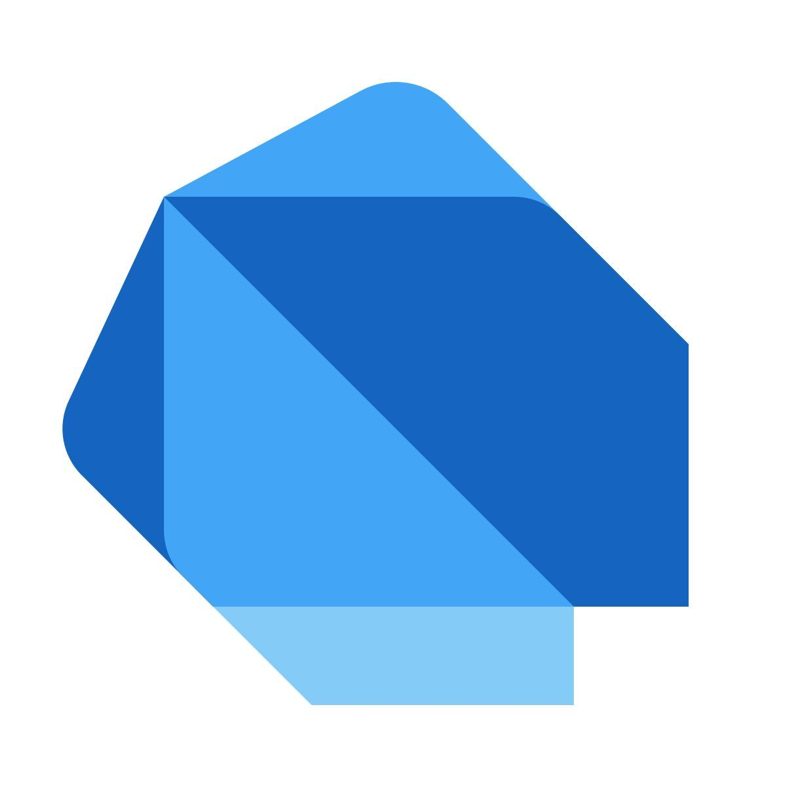
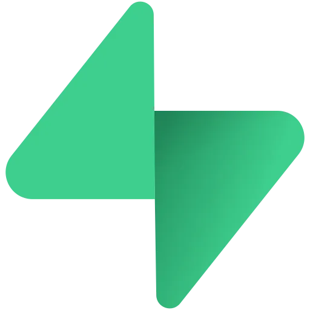
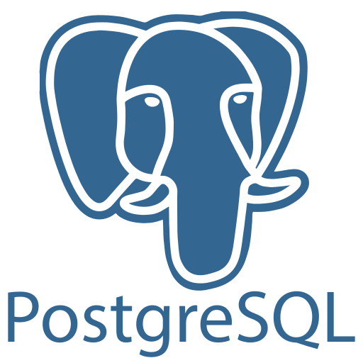

1. Tecnologias Utilizadas
O desenvolvimento do Receitando utiliza ferramentas e tecnologias responsáveis pela construção da interface, implementação da lógica e armazenamento das informações.

2. Flutter
Flutter é um framework utilizado para desenvolver a interface do aplicativo. Ele permite criar telas, botões, formulários, listas e outros componentes visuais para dispositivos móveis.
No projeto, o Flutter é responsável pela apresentação das telas e pela navegação entre as funcionalidades.
Documentação: Flutter
Instalação: Flutter

3. Dart
Dart é a linguagem de programação utilizada para desenvolver a lógica do aplicativo. Ela permite implementar validações, operações com dados e interações realizadas pelo usuário.
No projeto, Dart é utilizado para controlar o comportamento das telas e a comunicação com o Supabase.
Documentação: Dart
Instalação: Dart

4. Android Studio
Android Studio é o ambiente de desenvolvimento utilizado para escrever, organizar e executar o código do aplicativo.
Ele oferece ferramentas para depuração, gerenciamento do projeto e execução em emuladores ou dispositivos Android.
Documentação e instalação: Android Studio

5. Supabase
Supabase é uma plataforma de serviços de backend utilizada pelo aplicativo para gerenciar dados, autenticação e armazenamento de arquivos.
No projeto, ele é utilizado para autenticar usuários, armazenar informações das receitas e guardar imagens no Storage.
Documentação: Supabase

6. PostgreSQL
PostgreSQL é o sistema de gerenciamento de banco de dados relacional utilizado pelo Supabase. Ele permite organizar informações em tabelas e estabelecer relacionamentos entre registros.
No App de Receitas, os dados são organizados em tabelas como receitas, ingredientes, categorias e favoritos.
Documentação: PostgreSQL
7. Bibliotecas utilizadas
7.1. supabase_flutter
Biblioteca responsável por integrar o aplicativo Flutter aos serviços do Supabase, permitindo realizar operações de autenticação e acesso aos dados.
7.2. image_picker
Biblioteca utilizada para permitir a seleção de imagens do dispositivo, como fotografias de perfil e imagens de receitas.
As bibliotecas e suas versões podem ser consultadas no arquivo pubspec.yaml do projeto.
7.3. shared_preferences
Biblioteca que permite armazenar pequenas informações localmente no dispositivo. Sua utilização efetiva deve ser confirmada no código-fonte do aplicativo.
7.4. cupertino_icons
Biblioteca que disponibiliza ícones com estilo visual do iOS para utilização na interface Flutter.